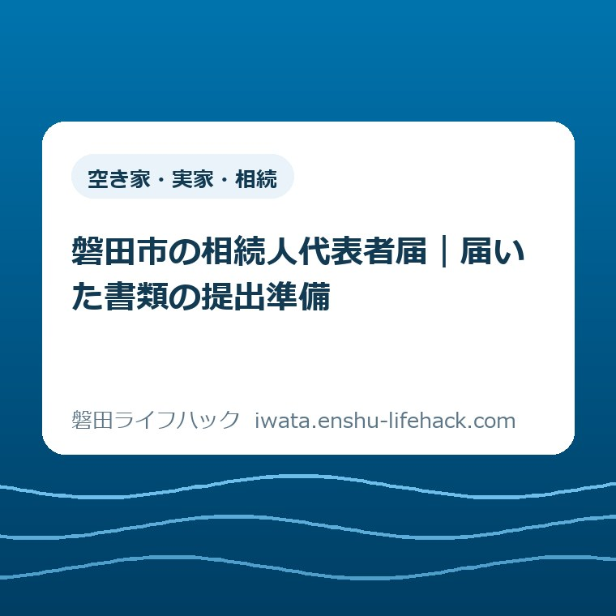
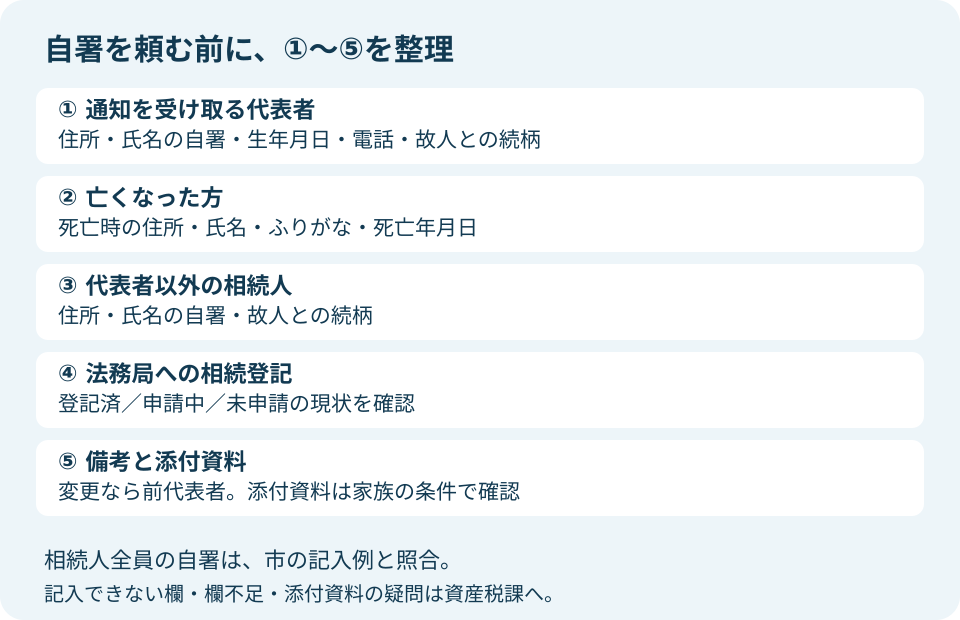
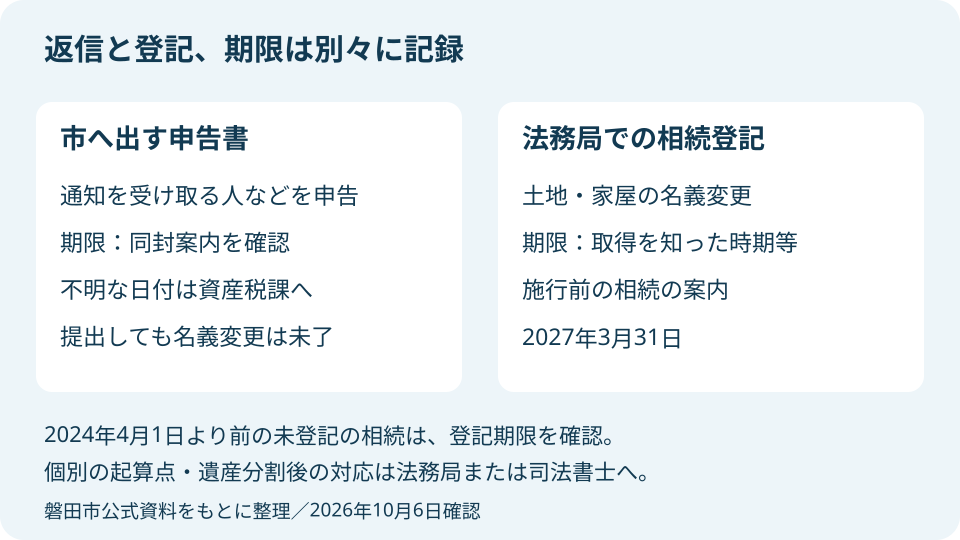

空き家・実家・相続
磐田市の相続人代表者届｜届いた書類の提出準備

この記事の要点
Q. 市から相続人代表者届が届いた。何から確認して書けばいい？
A. 相続関係や未登記家屋の有無で添付書類は変わります。まず同封案内の提出期限を確認し、通知を受け取る代表者、相続人全員の記載・自署、登記状況を記入例と照合します。この申告は遺産分割や名義変更ではありません。迷う欄は資産税課へ確認してから提出します。
届いた封筒を、家族の結論を迫る紙にしない
磐田市の相続人代表者届の提出準備は、相続関係と未登記家屋の有無で必要書類が変わります。届いた申告書だけを見て書き始めず、同封の案内、記入例、名寄帳兼課税台帳を一緒に広げてください。この記事は、親の土地や家に関する書類が届き、どこから手を付けるか迷うご家族向けの整理です。
親を亡くした後には、葬儀だけでなく銀行、保険、家の片付け、きょうだいへの連絡も重なります。市から封筒が届いても、全員の予定と気持ちが同時に整うわけではありません。記入に時間がかかるのは、家族が手続きを軽く考えているからとは限りません。連絡を取り、住所を確かめ、署名を頼むだけでも仕事です。
磐田市の公式ページ「相続人代表者（変更）届出書 兼 現所有者（変更）申告書」は、土地・家屋の所有者が亡くなってからおおむね2か月後に、死亡届出人または相続人へ書類を送ると説明しています。これは発送時期の目安です。「死亡から2か月以内に必ず提出」という期限の説明ではありません。
まず見るのは、ご家族に届いた案内の提出期限です。市のウェブページには期限までの提出を求める説明がありますが、この案内だけから全家庭に共通する日付を決めることはできません。期限が読めない、案内を紛失した、すでに過ぎている場合は、日付を想像して記入せず資産税課へ確認してください。
通知を受け取る代表者と、現所有者を分けて理解する
相続人代表者は、相続登記が完了するまで市からの納税通知書等を受領する相続人の代表者です。一方、現所有者は、所有者の死亡後に土地・家屋を所有する法定相続人や受贈者等を指します。磐田市は現所有者の申告を2020年度から義務として扱っており、今回の様式は二つの届出・申告を兼ねています。
市の説明で見落としやすいのは、この書類が実際の相続や遺産分割を行うものではないという点です。「代表」と聞くと、家を継ぐ人や家族の最終決定者を選ぶ印象があります。しかし、市へ通知の受取人を届けることと、土地や家を誰が取得するかを決めることは別の作業です。
代表者が決まったことだけを理由に、他の相続人は税のことを考えなくてよい、とも言えません。市は現所有者が納税義務を負うと説明しています。通知を受け取る役割と、誰がどのように費用を負担するかの家族間の話は、同じ人の名前で一括して終わらせない方が混乱を減らせます。
私が段取りとして勧めたいのは、「市からの郵便を開き、期限を確認し、家族へ知らせられるか」で受取人の役割を考えることです。長男、実家に近い人、葬儀の連絡をした人というだけで自動的に決めず、引き受ける本人の都合を確認します。これは代表者の法的な選任条件を追加する話ではなく、通知を止めないための家族の相談です。
市への申告と法務局で行う手続きの違いは、相続登記と相続人申告登記の比較記事でも整理しています。今回の記事では登記方法の比較を広げず、届いた申告書を提出できる状態にする作業に絞ります。

書き方は①から⑤へ。自署を頼む前に情報をそろえる
磐田市が掲載する記入例は、①相続人代表者兼現所有者代表、②被相続人、③代表者以外の相続人、④法務局への相続登記の状況、⑤備考という順です。家族の情報を別紙に整理してから様式へ転記すると、署名をもらった後に住所や続柄を直す手戻りを避けやすくなります。
①には代表者の住（居）所、ふりがな、氏名、生年月日、電話、②との続柄を記入します。続柄の基準は「書いている人から見た関係」ではなく、亡くなった方との関係です。市の記入例は氏名を自署するよう示しています。連絡先の数字まで、本人に確認してから記入してください。
②の被相続人は、亡くなった方のことです。死亡時の住（居）所、ふりがな、氏名、死亡年月日を記入します。実家の所在地と死亡時の住所が同じとは限りません。施設入居などで住所の把握に迷う場合には、家族の記憶だけで決めず、どの資料で照合すべきか資産税課へ尋ねます。
③は代表者以外の相続人の氏名、住（居）所、②との続柄を記入する欄です。記入例には相続人全員の自署を求める注記があります。代表者が全員の氏名を書けば済むと考えず、誰に署名を頼むか、手元の用紙をどう回すかを先に相談してください。
遠方の家族がいる場合、住所の連絡と原本への自署は別々に段取りを組む必要があります。先に住所を聞いておけば、用紙が本人に届いてから住所の表記で止まることを減らせます。欄が足りない、本人が自署できない、連絡がつかない場合の扱いは、独自の別紙や代筆で済むと判断せず市に確認してください。
④は「相続登記済」「相続登記申請中」「相続登記未申請」の三つから、該当番号に丸を付ける欄です。司法書士へ相談しただけで、法務局への申請が済んだとは限りません。依頼しているなら、現時点で申請済みか、登記が完了したかを依頼先へ確認し、その状態を記入します。
市の様式には、相続登記済みの場合は相続人代表者届出書として受領する旨の注記もあります。「登記が終わったから、届いた市の用紙は必ず捨ててよい」と自己判断しないでください。届いた案内にどの対応が必要なのか、登記完了の事実と合わせて資産税課へ確認します。
⑤は備考欄です。代表者を変更する場合は、前代表者を記入するという注記があります。初回の提出と変更の届出を混同せず、以前に誰を届けたかを確かめます。記入内容が定まらない説明を無理に詰め込むより、担当課へ質問して、必要な内容を確認してから記す方が確実です。
なお、掲載中の記入例と空欄の様式には、表示が一致しない箇所があります。自署や添付書類については読み取れますが、押印の要否などを画像の印象だけで決めないでください。実際に届いた用紙と同封案内を照合し、違いがあればその箇所を市に聞くのが提出準備です。
添付書類は、相続放棄と未登記家屋で分岐する
相続人代表者届の添付書類は、全家族で同じではありません。磐田市の公式ページと「提出書類確認フローチャート（参考）」は、法定相続人か、相続放棄の手続きがあるか、故人が家屋を所有していたか、未登記家屋があるかを確認するための資料です。関係する分岐を見てから封筒に入れる書類をそろえます。
市の説明は、相続放棄をした場合に相続放棄申述受理通知書の写しを求めています。「私は家をもらわない」と家族で話したことと、家庭裁判所での相続放棄の手続きは分けて扱ってください。市のフローチャートには、放棄の状況に応じて申告書ではなく受理通知書の写しを返送する分岐があります。
相続放棄を検討中の人は、このブログの記入手順だけで提出の可否を決めないでください。市へ状況を連絡するとともに、家庭裁判所や相続に詳しい専門家へ手続きと期限を確認します。市の用紙を提出する期限と、相続放棄について判断する期限を、同じ日付だと思い込まないことが必要です。
法定相続人以外の人が相続人となる場合、市の説明は公正証書等の相続したことが分かる書類の写しを求めています。誰が該当するか、手元の遺言などが提出資料として足りるかは内容で変わります。資料名だけで結論を出さず、代表者になる人と相続関係を市へ伝えて確認してください。
未登記家屋がある場合のフローチャートには、今回の申告書に加えて未登記家屋異動届出書、遺産分割協議書の写しを提出する分岐があります。「相続登記未申請」と「家屋そのものが未登記」は別の話です。親名義で登記されている家と、登記されていない家を同じ意味の未登記として扱うと、準備する書類を取り違えます。
市のフローチャートは、同封の名寄帳兼課税台帳を参照して家屋の有無や家屋番号を確認する形になっています。番号が読めない、別棟の物置がどれか分からない、資料に載る建物と現地が一致しない場合は、該当行を示して資産税課に聞きます。空欄を見ただけで建物の登記状態を最終判断しないでください。
名寄帳と登記の資料は目的も範囲も違います。資料を増やす前に違いを知りたい方には、所有不動産記録証明書と名寄帳の比較記事が役立ちます。今回の申告のために全国の証明を必ず取り直すという意味ではなく、手元の紙が何を示すかを理解するための補助です。
提出先と方法を決め、郵送前に控えを残す
磐田市の相続人代表者届の提出先は、市役所本庁1階の資産税課土地グループです。公式ページは、同封の返信用封筒での郵送と資産税課窓口への直接提出を案内しています。仕事や家族の移動の負担に合わせて選べますが、分からない欄を埋めずに送ればよいという意味ではありません。
郵送を選ぶなら、申告書の記入、自署、該当する添付資料、封筒の宛先を一度に確認します。期限が必着か消印基準かは、同封案内の記載を見てください。分からなければ発送日から逆算して推測せず、市へ尋ねます。返信用封筒の利用方法も、手元の案内に沿って確認します。
私の勧めは、封を閉じる前に記入済みの申告書と添付資料の控えを残すことです。これは市の必須書類を増やす提案ではなく、後日家族から「誰を代表にしたのか」「何を送ったのか」と聞かれた際に答えるための備えです。個人情報を含むので、共有先と保管場所を家族内で決めてください。
窓口へ行く場合は、提出だけなのか、記入欄や添付資料の相談もしたいのかを分けて準備します。資産税課は国府台3-1の本庁舎1階にあり、公式ページの連絡先は0538-37-4809、受付時間は午前8時30分から午後5時15分です。来庁日や必要な持ち物は、訪問前に市の公式案内で確認してください。
送付先変更の手続きで代用できるとは考えない
納税通知書の送付先変更と相続人代表者届は、用紙の役割が異なります。磐田市の公式ページ「納税通知書等の送付先の変更手続き」は、住民票上の住所と別の住所に通知を送りたい場合などを説明しています。住所を変えるだけの届出を、死亡後の現所有者の申告と取り違えないでください。
同ページには、海外転出や納税義務者が磐田市外在住の場合、固定資産税・都市計画税などについて送付先届出ではなく納税管理人の申告が必要となる説明があります。代表者候補が市外で暮らしている家庭は、今回の申告以外に何が必要かを資産税課へ確認します。住所と税目、本人の状況を伝えると質問を絞れます。
たとえば「親が亡くなり、通知を受け取る候補者は市外在住です。今回の相続人代表者届に加えて必要な届出がありますか」と聞く形です。市の電子申請の一覧を見て、名前が似たものを先に送るより、目的を伝えて適切な様式を確かめます。相続後の税の全体像は固定資産税と相続の手続きガイドから確認できます。
2027年3月31日は、同封書類の提出期限とは別
2024年4月1日より前に始まった相続で登記が未了の不動産について、磐田市は2027年3月31日までの相続登記を案内しています。これは法務局への登記の話であり、届いた相続人代表者届の提出期限ではありません。以前に親を亡くしたご家族は、市への返信と登記の期限を別の欄に記録してください。
2026年10月6日の時点で、2027年3月31日は翌年の3月末です。ただし、相続の開始や取得を知った時期、遺産分割の状況などにより、登記の期限と必要な対応は個別に確認が必要です。「全員が2027年3月31日まで何もしなくてよい」と読むことはできません。登記については法務局または司法書士に確かめます。
市への申告を提出しても、土地・家屋の登記名義が変わったわけではありません。市の案内は、名義変更には別途法務局で相続登記が必要と明示しています。書類を送り終えた日に、登記の相談先や現在の進み具合も家族のメモに残せば、「全部終わった」と思って次の作業が止まることを避けられます。

良い点——記入例と分岐図が、提出準備の足場になる
磐田市の案内の良い点は、空欄の様式だけでなく記入例と提出書類のフローチャートが掲載されていることです。①から⑤の番号、自署の注記、未登記家屋がある場合の追加書類を確かめられます。家族が別の場所で暮らしていても、同じ資料を見て連絡を取り合うための足場になります。
郵送と窓口提出の両方が示されていることも、家族の段取りに役立ちます。自署を集めた用紙を代表者が郵送するなら、全員が同じ日に市役所へ行く予定を立てる負担を減らせます。市へ提出する役割と家族内で必要な連絡を整理して、使える方法を選ぶことが大切です。
注文したい点——書類名だけでは家族の役割が見えにくい
相続人代表者届への注文したい点は、「代表者」と「現所有者」が一枚の表題に並び、通知を受け取る仕事と財産を取得する話の区別を家族側が読み解く必要があることです。記入欄が埋まることと、家族が役割を理解することには距離があります。そこを読み飛ばすと、署名を頼む段階で不安が強くなります。
私は、家族へ回す紙に「今回決めるのは通知を受け取る人。財産の分け方をこの用紙だけで決めるものではない」と説明を添えるのがよいと考えます。市の説明を根拠に用紙の役割を共有した上で、自署を頼みます。署名を急がせるための説明ではなく、何に記入するのかを本人が理解するための説明です。
大石の視点——署名を集める前に、郵便の行き先を話す
大石浩之（磐田市／不動産業）として、私は家族の段取りから考えます。相続人代表者届は、書ける人が全部背負う形にしてはいけません。誰が通知を受け取り、誰に内容を知らせ、質問が出たら誰が市へ聞くか。用紙を埋める前に、その仕事を見える形にすることが提出準備の中心です。
私なら、机の上で申告書と返信用封筒を分けて置き、まず案内にある期限を一行で書きます。次に代表者の候補と、まだ確認できていない住所や署名だけをメモします。これは実際にあった相談の再現ではなく、私が考える進め方です。相続の結論を一度に出そうとせず、今日動かせる作業の範囲をはっきりさせます。
正直に言うと、連絡が取りづらい家族に、どの順番で署名を頼むのが一番よいかは私にも一律には決められません。故人との関係も、家族の事情も違います。ただ、代表者が用紙を持っているというだけで他の人の名前まで書いて済ませるのは違います。困っている欄を具体的にして市へ確認する方が、家族への説明も正確になります。
対案・結論——今日の一歩は、同封案内の期限確認
相続人代表者届の提出に向けて2026年10月6日にできる一歩は、同封案内の提出期限を確認することです。申告書を今日中に完成させることを目標にする必要はありません。期限が分かれば、代表者の相談、自署の依頼、添付資料の確認を、家族の予定に合わせて並べられます。
確認した日付は、案内の文言も一緒にメモします。「提出期限」「必着」など、どのように書かれているかまで残すと、郵送の予定を立てやすくなります。日付が見つからないときは、「届いた相続人代表者届の提出期限を確認したい」と資産税課へ電話してください。確認する対象は一つです。
期限を見た後の準備は、①代表者と連絡先、②亡くなった方の情報、③他の相続人の住所と自署、④登記の現状、⑤該当する添付資料という順に進めます。相続全体の作業を確認したくなった場合は、相続手続きの案内から必要な項目へ移れます。今回の用紙のための作業と、それ以外を同時に抱え込まないためです。
制度や様式は変わる場合があり、相続関係によって必要書類も異なります。相続人の範囲、放棄、遺言、登記の期限の個別判断は専門家に確認してください。提出前には必ず磐田市の公式ページと実際に届いた案内を照合し、記入や添付書類に迷う点は資産税課へ確認してから提出します。
FAQ——提出準備で迷う3問
磐田市の相続人代表者届について、受取人の役割、自署、期限の三つを確認します。実際の相続関係や届いた案内に違いがある場合は資産税課へ確認してください。
代表者になると、家を一人で相続することになりますか？
いいえ。市の説明では、相続人代表者は登記完了まで納税通知書等を受け取る人です。この届出は遺産分割や土地・家屋の名義変更を行うものではありません。現所有者の申告も兼ねるため、記載する相続人を確認し、取得する財産の話とは分けて家族で共有してください。
相続人全員の署名が必要ですか？
磐田市の記入例は相続人全員の自署を求めています。代表者の①と、代表者以外の相続人の③を確認してください。相続放棄などで提出書類の分岐がある場合や、本人が自署できない、欄が足りない場合は、代筆や別紙でよいと判断せず、資産税課に状況を伝えて対応を確認します。
申告書の期限は2027年3月31日ですか？
その日付を今回の申告書の期限に当てはめないでください。市が案内する2027年3月31日は、2024年4月1日より前の未登記の相続に関する相続登記の期限です。申告書は同封案内の期限を確認し、不明なら資産税課へ問い合わせます。登記の個別の期限は法務局等へ確認してください。
参考にした公式情報
- 相続人代表者（変更）届出書 兼 現所有者（変更）申告書／磐田市（2025年3月4日更新、2026年10月6日確認。様式・記入例・提出書類確認フローチャートを含む）
- 納税通知書等の送付先の変更手続き／磐田市（2025年2月26日更新、2026年10月6日確認）
最終確認日：2026-10-06 ／ 本記事は公表情報と執筆者の見解を分けて記載しています。制度・数値・公開状況は変更される場合があるため、最新情報は磐田市公式ページでご確認ください。

大石浩之／磐田市／不動産業・宅地建物取引士